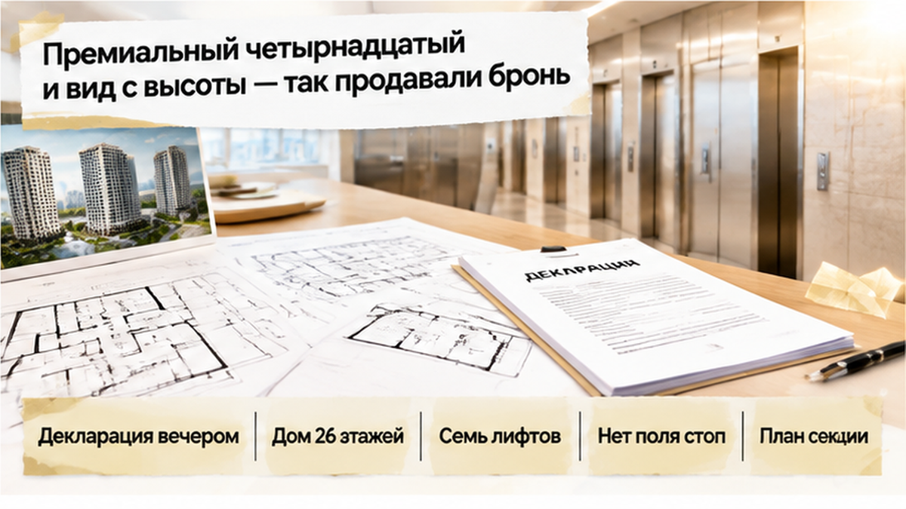
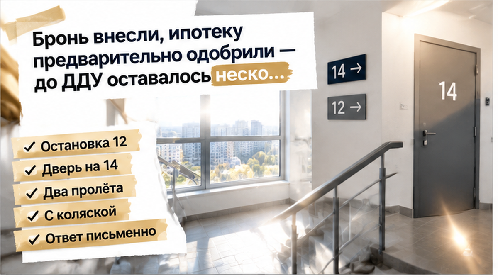
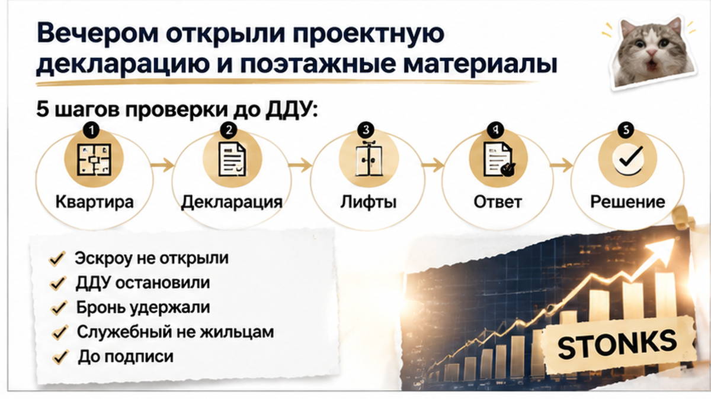
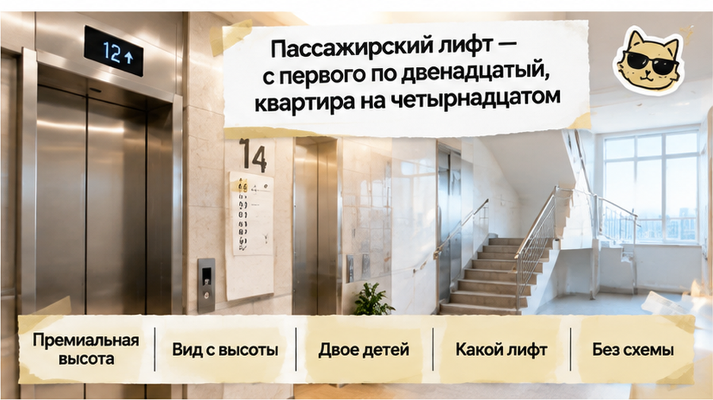
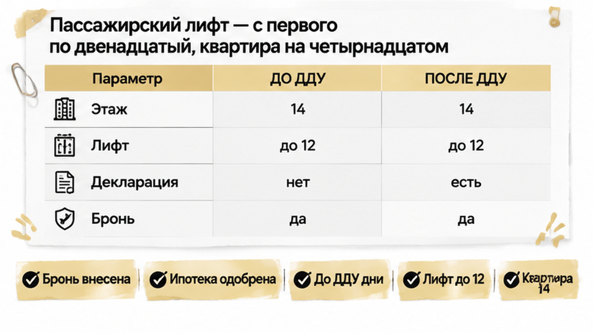
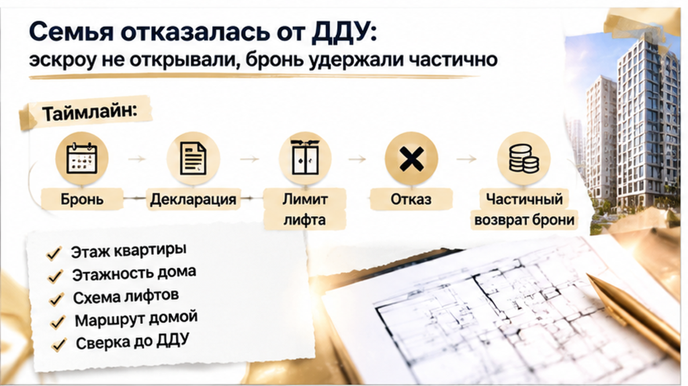
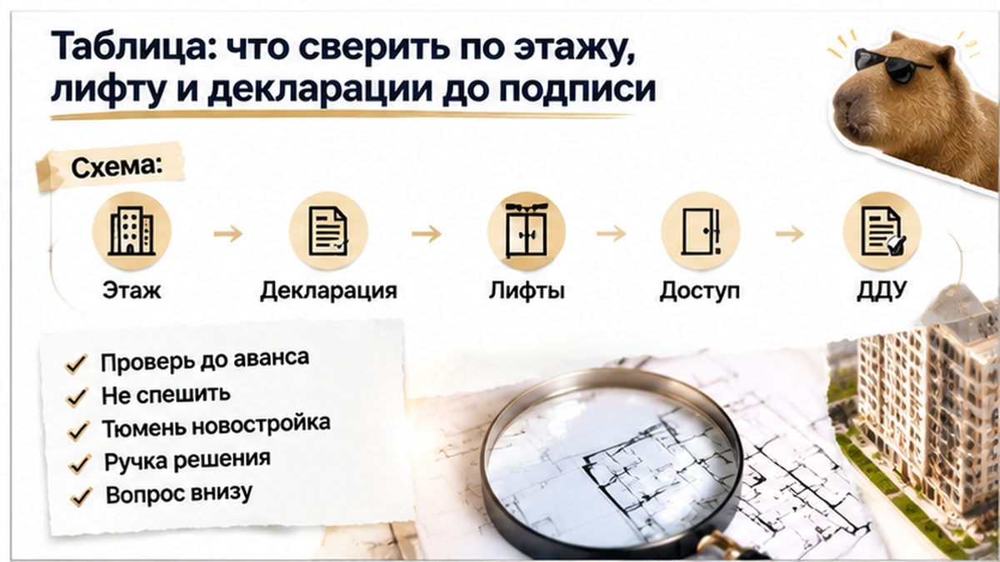

14-й этаж, а пассажирский лифт — только до 12-го. Семья остановила сделку до подписания ДДУ, хотя в офисе продаж квартиру показывали как вариант с «премиальной высотой» и видом сверху. Родители проверили не рекламную формулировку, а обычный маршрут домой: с детьми, коляской и пакетами. До договора оставалось несколько дней, бронь уже внесли, ипотеку предварительно одобрили.
Я, Святослав Шакин, The Риэлтор из Тюмени, рассказываю изнутри, где в новостройке заканчивается красивое обещание и начинаются документы. Если выбираете квартиру и хотите спокойно проверить её до аванса, подписывайтесь в Telegram и переходите в MAX.
На встрече менеджер показывал планировки и несколько раз повторял: «Премиальная высота». Для семьи с двумя детьми это звучало убедительно: верхний этаж — больше света, тише во дворе, красивее вид.
Но рекламная высота не отвечает на простой вопрос: как жильцы будут попадать домой каждый день? Коляска, ребёнок, продукты, зимняя одежда. Разовый подъём по лестнице можно назвать мелочью, но повторять его годами — уже часть качества жизни.

Семье не показали техническую схему остановок лифтов и не дали письменного ответа с указанием секции, подъезда, конкретного лифта и верхней остановки.
Обычный покупатель слышит: «В доме много лифтов». Профи задаёт другой вопрос: «Какой именно лифт довозит до моей квартиры?» Похожий разрыв между словами в офисе и документами уже останавливал сделки в Тюмени: в проектной декларации и документах находилось другое, чем обещали в брони.
После просмотра семья внесла платную бронь, а банк предварительно одобрил ипотеку. Казалось, дальше останется формальность: подписать ДДУ, открыть эскроу и ждать ключи.
Но предварительное одобрение ипотеки не проверяет схему лифтов: банк оценивает кредитную сделку, а не путь от входа в подъезд до двери квартиры. Бронь тоже не равна ДДУ — порядок возврата или удержания денег зависит от текста конкретного договора, и единого правила о полном возврате нет.
Вечером родители открыли документы дома и сопоставили красивый «верх» с реальным маршрутом: пассажирский лифт поднимался до 12-го этажа, а забронированная квартира находилась на 14-м.

В такой момент важно не убеждать себя, что «как-нибудь разберёмся после подписания». Сначала нужно понять, что именно покупается и каким будет ежедневный быт.
Разумнее остановиться до ДДУ, чем торопиться из-за уже внесённой брони или одобрения банка. Так семья поступала и в истории, где накануне ДДУ вырос ипотечный платёж: условия сделки изменились — покупатели не стали делать вид, что это мелочь.
Дома родители открыли проектную декларацию в ЕИСЖС и на дом.рф, затем посмотрели поэтажные материалы. Эти документы нужно читать вместе.
Декларация показывает общие характеристики объекта: этажность дома, количество лифтов и их виды. План и экспликация помогают понять устройство конкретной секции. Но в обязательных сведениях декларации нет универсального поля с готовым ответом: на каком этаже останавливается каждый пассажирский лифт.
Поэтому запись «дом на 26 этажей» и «несколько пассажирских и грузопассажирских лифтов» сама по себе ничего не говорит о маршруте до конкретной квартиры. Лифт может быть в доме, но не доезжать до нужного этажа.

Это важное различие. Декларация может быть заполнена корректно и при этом не отвечать на бытовой вопрос семьи: как ежедневно добираться домой с ребёнком, коляской и покупками.
Если в офисе продаж звучит «премиальный верхний этаж», нужно искать документы, где зафиксирован маршрут доступа к квартире: конкретная секция, подъезд и верхняя остановка лифта.
На поэтажной схеме семья увидела лифтовые узлы, лестницу и обслуживаемые пассажирским лифтом этажи. Верхняя остановка находилась на 12-м этаже. Забронированная квартира — на 14-м.
Это ещё не означало автоматически, что дом незаконен или застройщик обязан вернуть деньги. Документы показали другое: представление о квартире «наверху» не совпало с фактическим ежедневным маршрутом.
Для окончательной проверки требовалось письменное разъяснение с указанием секции, подъезда, лифта и этажа остановки. Служебный или грузопассажирский лифт нельзя автоматически считать обычным пассажирским: нужны правила эксплуатации и письменные условия доступа.


Когда семья сопоставила два числа — 12 и 14, — формула «вид с высоты» зазвучала иначе. Пассажирский лифт останавливался на двенадцатом этаже, а квартира находилась на четырнадцатом. Между верхней остановкой и дверью оставались два лестничных этажа.
Один раз подняться можно. Но квартира — это не один подъём после просмотра, а тысячи маршрутов: с детьми, коляской, пакетами, зимой, после болезни или тяжёлого рабочего дня. Для семьи с двумя детьми именно этот бытовой сценарий оказался важнее красивого описания верхнего этажа.
Родители уточняли, как устроен переход от лифтового холла к квартире, где оставить коляску, есть ли другой маршрут и разрешён ли доступ через соседний лифтовой узел. В офисе продаж звучала общая фраза про лифты, но письменного ответа по конкретной секции и квартире не было.
СП 54.13330.2022 устанавливает требования к лифтам при определённой высоте верхнего жилого этажа и предусматривает отдельные исключения для некоторых планировочных решений. Но это не универсальное правило, по которому можно сразу признать конкретный проект нарушением. И нельзя по одной этажности сделать обратный вывод, будто любой верхний этаж обязательно должен обслуживаться пассажирским лифтом.
Проверять нужно документацию именно этого дома: секцию, подъезд, тип лифта и верхнюю остановку. Вопрос застройщику лучше формулировать конкретно: «До какого этажа останавливается пассажирский лифт в моей секции и каким документом это подтверждено?»
Ответ желательно получить письменно. В нём должны быть указаны подъезд, секция, номер или вид лифта и этаж остановки. Если снова появляются только «премиальный вид», «верхний этаж» или «в доме много лифтов», проверка не закончена.
Предварительное одобрение ипотеки эту характеристику не подтверждает. Банк оценивает кредитную сделку, но не проверяет маршрут от входа в подъезд до двери квартиры. Бронь тоже не заменяет ДДУ и не делает устное обещание техническим условием договора.
До подписи ДДУ у покупателя остаётся возможность остановиться, если представление о квартире не совпало с фактическим ежедневным маршрутом. Это не означает, что проект незаконен. Это означает, что семье нужно принять решение, понимая нагрузку, которую она получает вместе с квартирой.

На следующий день семья попросила офис продаж письменно подтвердить схему остановок лифтов. Выяснилось, что «премиальная высота» и вид не заменяют технический документ: пассажирский лифт обслуживал этажи с первого по двенадцатый, а служебный не предназначался для постоянного использования жильцами.
Для квартиры на четырнадцатом этаже это означало ежедневный подъём по лестнице с коляской, детьми и покупками. Перед ДДУ семья уже считала не метры на плане, а обычный вечер: зайти домой, поднять ребёнка, занести продукты, оставить коляску и снова спуститься.
До подписания договора оставалось несколько дней. Эскроу родители не открывали, деньги не переводили и решили остановить сделку. По договору бронирования часть суммы удержали.
Нельзя делать общий вывод, будто при любом отказе застройщик обязан вернуть всю бронь. Порядок зависит от текста конкретного соглашения: договор бронирования — не ДДУ, его условия нужно читать до внесения денег.
Предварительное одобрение ипотеки тоже не гарантировало безопасность. Банк оценивал возможность кредитования, но не проверял, довозит ли лифт до нужного этажа и как жильцы добираются от входа до двери квартиры.
Семья остановилась до открытия эскроу и подписания ДДУ — ещё можно было отказаться без спора о качестве квартиры на приёмке и попытки исправить решение после заселения.
Купили бы квартиру на 14-м этаже, если лифт официально только до 12-го, а в брони обещали вид с высоты?
Проверять нужно не общее число лифтов, а маршрут от входа до конкретной квартиры. Проектная декларация показывает этажность и количество лифтов по видам, но отдельного универсального поля с остановками каждого лифта может не быть.
| Что проверяем | Что может быть указано в документе | Что запросить дополнительно |
|---|---|---|
| Этаж квартиры | Номер этажа, план и описание объекта | Совпадение этажа в брони, проектной документации и ДДУ |
| Этажность дома | Максимальная этажность объекта в проектной декларации | Поэтажные планы и экспликацию своей секции |
| Лифты | Количество пассажирских и грузопассажирских лифтов | Письменную схему: какой лифт и до какого этажа идёт |
| Маршрут до квартиры | Общие проектные материалы и план этажа | Как житель с коляской попадает домой с первого этажа |

Актуальную редакцию декларации проверяйте в ЕИСЖС на дом.рф и сопоставляйте с материалами из офиса продаж. В ДДУ объект должен быть индивидуализирован так, чтобы было понятно, какую именно квартиру приобретает дольщик.
По одной этажности нельзя сделать вывод ни о нарушении, ни о том, что любой верхний этаж обязательно обслуживается пассажирским лифтом. СП 54.13330.2022 содержит требования при определённой высоте верхнего жилого этажа и предусматривает исключения. Для конкретного дома нужны проектные документы и схема вашей секции.
Грузопассажирский или служебный лифт нельзя автоматически считать доступным жильцам. Его назначение, режим эксплуатации и возможность постоянного использования подтвердите письменно: фраза «им можно будет пользоваться» не равна гарантированному ежедневному маршруту.
Так же проверяются другие обещания при бронировании. Срок газа нужно сопоставить с декларацией и документацией, как в истории, где называли 2026 год, а в документах стоял другой срок: разбор по газу. При смене застройщика новый ДДУ нужно прочитать до открытия эскроу — здесь показал такую ситуацию.
Запросите письменно: «Какие лифты останавливаются на четырнадцатом этаже?», «Относится ли схема к моей секции?», «Разрешено ли жильцам постоянно пользоваться лифтом, обозначенным как служебный или грузопассажирский?» Ответ должен ссылаться на проектный документ либо быть подписан застройщиком.
Если выбираете новостройку в Тюмени и хотите спокойно проверить этаж, планировку и документы до сделки, подписывайтесь на Telegram и переходите в MAX. Я, Святослав Шакин, подключусь к проверке без спешки и красивых обещаний вместо фактов.
Перед ДДУ и эскроу сверяйте этаж квартиры с верхней остановкой пассажирского лифта. Запросите схему для своей секции, подъезда и конкретного лифта. Если маршрут «домой с коляской» не ясен, пауза до подписания — нормальная проверка.